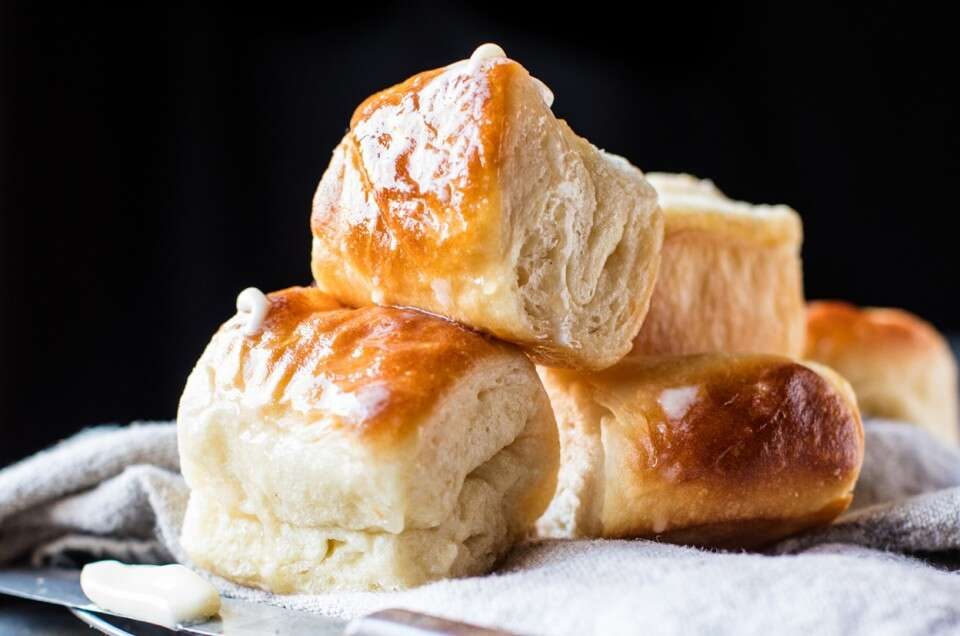

Parker House Rolls

Description
These feather-light, buttery rolls were a 19th-century staple of the Parker House, a famous Boston hotel — the same hotel that in 1855 created the first Boston Cream Pie. So what makes a Parker House roll special?
Butter. A buttery fold during the shaping process (and butter brushed on after they're baked) give them over-the-top flavor. An egg, milk, and a fair amount of butter in the dough give them fine and tender texture. All in all, this Boston-based roll is a bread-basket classic.
Ingredients
- 3 cups (360g) Unbleached All-Purpose Flour
- 2 1/2 teaspoons instant yeast
- 3 tablespoons (39g) granulated sugar
- 1 1/4 teaspoons (8g) salt
- 1/4 cup (50g) potato flour or 3/4 cup (50g) dried potato flakes (instant mashed potatoes)/li>
- 3 tablespoons (43g) butter, at room temperature
- 1 cup (227g) milk
- 1 large egg
- 3 1/2 to 4 tablespoons (50g to 57g) butter, melted; for brushing on rolls
Steps
- Weigh your flour; or measure it by gently spooning it into a cup, then sweeping off any excess. In a large mixing bowl, or in the bowl of an electric mixer, combine all of the ingredients (except the 3 1/2 to 4 tablespoons (50 to 57g) melted butter at the end), mixing to form a shaggy dough. Note: to speed the rising process, whisk together the milk and egg, and heat gently just enough to remove the refrigerator chill; then add to the remaining ingredients.
- Knead the dough, by hand (10 minutes) or by machine (7 to 8 minutes) until it's smooth.
- Place the dough in a lightly greased bowl or 8-cup measure (so you can track its rising progress). Allow it to rise for 90 minutes; it'll become quite puffy, though it probably won't double in bulk. Note that the dough takes quite awhile to get going; after 1 hour, it may seem like it's barely expanded at all. But during the last half hour, it rises more quickly.
- Transfer the dough to a lightly greased work surface. Divide it in half. Working with one half at a time, roll or pat the dough into an 8" x 12" rectangle.
- Brush the dough all over with a light coating of the melted butter. You'll have butter left over; you'll need it for the other half of the dough, as well as for brushing on top of the baked rolls.
- Cut the dough in half lengthwise, to make two 4" x 12" rectangles. Working with one rectangle at a time, fold it lengthwise to about 1/2" of the other edge, so the bottom edge sticks out about 1/2" beyond the top edge. You'll now have a rectangle that's about 2 1/4" x 12". Repeat with the other piece of dough.
- Cut each of the rectangles crosswise into four 3" pieces, making a total of 8 folded rolls, each about 2 1/4" x 3". Flip the rolls over (so that their smooth non-folded side is facing up), and place them in a lightly greased 9" x 13" pan. Repeat with the remaining piece of dough, making 16 rolls in all. You'll arrange 4 rows of 4 in the pan, with the longer side of the rolls going down the longer side of the pan. Gently flatten the rolls to pretty much cover the bottom of the pan.
- Cover the pan, and let the rolls rise for about 45 minutes to 1 hour, until they're puffy but definitely not doubled. Towards the end of the rising time, preheat the oven to 350°F.
- Bake the rolls for 20 to 25 minutes, until they're golden brown and feel set.
- Remove them from the oven, and brush with the remaining melted butter. Pull them apart to serve.
Back to Home